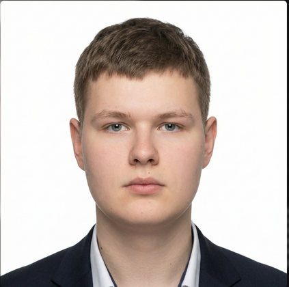

Аналитик — переводчик между бизнесом и разработкой: интервью с заказчиком → формализация требований → SRS и контракты интеграций → приёмочное тестирование поставки. Полный цикл показан в интерактивном кейсе по адресу kerarty.github.io/cv-belgazprombank.